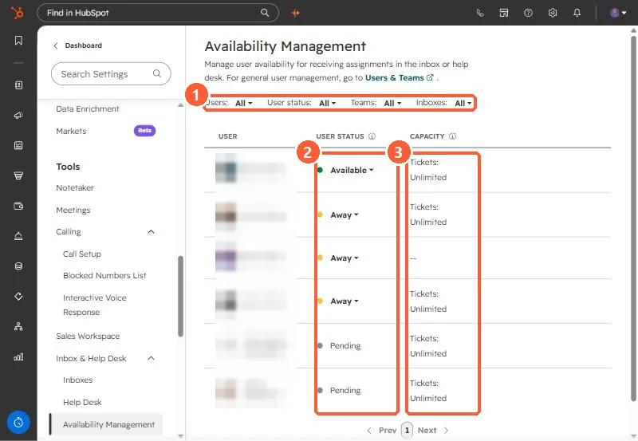

Short answer
In Settings, Inbox & Help Desk, Availability Management, each user shows a status (Available, Away, or Pending) and ticket capacity. HubSpot says status follows working hours: Available at the start, Away at the end, and users can switch it manually. Automatic ticket assignment only goes to available users. People with the Availability Management permission can change others' status.
1. The page
Open Availability Management. Names are blurred below.


- Available: can receive new assignments.
- Away: skipped by automatic assignment.
- Pending: shown for two users in my demo.
- Capacity: Unlimited for most users here.
2. Why someone gets no tickets
- They are Away because their working hours ended or they set it manually.
- They reached their ticket capacity. Capacity is set under Help Desk, Ticket Capacity.
- They are not in the team or inbox the routing rule uses.
See inbox channels for where tickets come from.